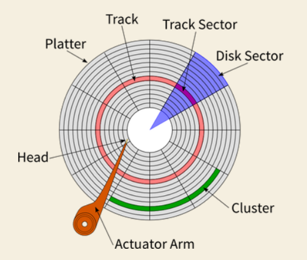

Computer Architecture
RISC, CISC, SPARC architectures
- Reduced Instruction Set Computing (RISC): Single-clock, reduced instruction only; register to register: “LOAD” and “STORE” are independent instructions; low cycles per second, large code sizes; spends more transistors on memory registers. Small, highly optimized set of instructions, with a large number of registers and a highly regular instruction pipeline. Allows for a low number of clock cycles per instruction. Decodes starting at the lowest-addressed byte of the instruction (invariant endianness)
- Complex Instruction Set Computing (CISC): Includes multi-clock complex instructions, memory to memory “LOAD” and “STORE” incorporated in instructions; small codes sizes, high cycles per second; transistors used for storing complex instructions Special instructions, as well as instructions that take more than one clock cycle.
- Scalable Processor Architecture (SPARC): 32bit and 64bit open microprocessor architecture from Sun Microsystems. Based on RISC. Reduced instruction set computing (RISC) originally developed by Sun Microsystems. Purely ‘Big-endian’
x86 vs x64 bit
x86
No more than 4GB of RAM allowed to be installedx64
More than 4GB of RAM can be installedx86 Architecture
Traits/examples of x86 Architecture
- Based on CISC computing.
- No more than 4 GB of RAM allowed in x86 systems. (more than 4 GB can be installed in 64 bit)
- Intel, AMD
- Purely ‘Little-endian’
- Note: ‘Endianness’ (big/little) refers to the order or sequence of bytes of a word of digital data in computer memory. A big-endian system stores the most significant byte (MSB) of a word at the smallest memory address and the least significant byte (LSB) at the largest memory address. ~A little-endian system stores the LSB at the smallest address. (Big/M/Small & Little/L/Small)?
Back to Categories
Software/Hardware/Firmware
- Software: The programs and other operating information used by a computer.
- Hardware: Collection of physical parts of a computer system
- Firmware: Permanent software programmed into a read-only memory.
HDDs/SSDs
- Partitions: Section of the drive that is separated from other segments of the drive.
- Sectors: Subdivision of a track on a magnetic disk or optical disc. Each sector stores a fixed amount of user-accessible data. The sector is the minimum storage unit of a hard drive. (512B)
- Platters: One of the disks in a hard disk drive. Each platter provides a top and bottom recording surface. There may be only one or several platters in a drive with each platter having its own pair of read/write heads.
- Nodes: Provide important information on files such as user and group ownership, access mode (read, write, execute permissions) and type. Data structure in Unix-like file system that describes a file-system object such as a file or directory. (Think: metadata) Stores information about files/directories such as file size, ownership, access mode (permissions ‘rwx’), and file type.
- Logical: Refers to the virtual space that is allocated within the disk itself.
- Physical: Refers to the physical hardware within the system.
Storage and Memory
Order of Volatility
- Registers, Cache
- Routing Table, ARP cache, Process Table, Kernel Statistics, Memory
- Temporary File systems
- Disk
- Remote Logging/Monitoring Data (relevant to system)
- Physical Configuration, Network Topology
- Archival Media
Storage
- Primary Storage – Often referred to simply as Memory. Only type of memory directly accessible to the CPU. (RAM).
- Secondary Storage – Differs from Primary Storage in that it’s not directly accessible by the CPU. ‘Non-volatile’ memory storage; basically any storage that is not Primary is Secondary. Hard-disk Drives (HDDs), Solid-state Drives (SSDs), and any kind of external storage technologies (USB drives, floppy disks, magnetic tape, etc) Formatted according to file system format, providing the abstraction necessary to organize data into files and directories, as well as metadata (file owner, access time, permissions, etc)
- Physical Storage – Includes HDDs, SSDs, Magnetic Tape, etc. HDDs: (Hard-disk Drive, an electro-mechanical data storage device that utilizes magnetic storage and one or more rigid rapidly rotating platters coated with magnetic material.) Made up of Platters, which are divided into Sectors, and Tracks. Data is stored on the surface of the platters in sectors and tracks using a form of magnetic charges. Data is read when the magnetic heads on the actuator arms move over the platter surface, the heads will detect changes in magnetization and read/write them as binary data bits. Sectors – subdivision of a track on a magnetic disk or optical disk. Each sector stores a fixed amount of user-accessible data. Platters – Disks in a hard drive. Each platter provides a top and bottom recording surface. (one or several platters in a drive with each having its own pair of read/write heads.)
- Logical Storage – A virtual space/device (does not exist as a physical entity in its own right). Includes partitions, logical disk, logical volume, virtual disk, etc. Partition – A logical section of a physical storage device, allows you to make data smaller than a platter. Treated like a separate logical volume, making it function similarly to a separate physical storage device. Any partition may be mounted except those marked as startup disks.
- Memory Paging – When RAM is full, these will act as a form of virtual memory Utilizes least-used chunks of secondary storage to increase the capacity of primary storage, albeit at the cost of performance. (More instruction count, less speed.) Windows: Page File (pagefile.sys) Unix: ‘Swap’ – the term swap is applied to any form of memory that is dedicated to swapping, such as partitions, and even harddrives. (swap partition/swap drive, respectively)

Drivers
- Device Drivers
- Computer programs that operate or control a particular type of device that is attached to a system.
- Provides a software interface to hardware devices, enabling operating systems and other computer programs to access hardware functions.
- Network Drivers
- Device driver that enables a network device to communicate between the computer and operating system, and with other network computers and devices.